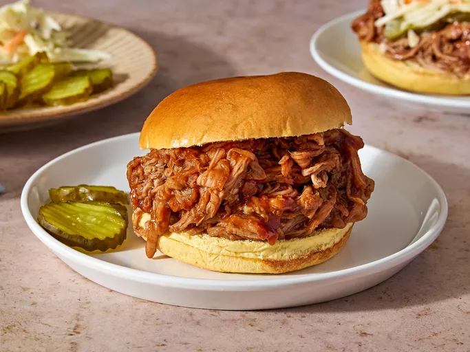

Home
Slow Cooker Pulled Pork Recipe

Description
A recipe for juicy, shredded, irresistible pulled pork.
Ingredients
- 1 (2-pound) pork tenderloin
- 1 (12-fluid ounce) can or bottle root beer
- 1 (18-ounce) bottle your favorite barbecue sauce
- 8 hamburger buns, split and lightly toasted
Steps
- Gather the ingredients.
- Place pork tenderloin in a slow cooker; pour root beer over top.
- Cover and cook on Low until pork shreds easily, 6 to 7 hours.
Note: the actual length of time may vary according to the individual slow cooker.
- Drain well. Stir in barbecue sauce.
- Pile pulled pork onto hamburger buns.
- Serve and enjoy!